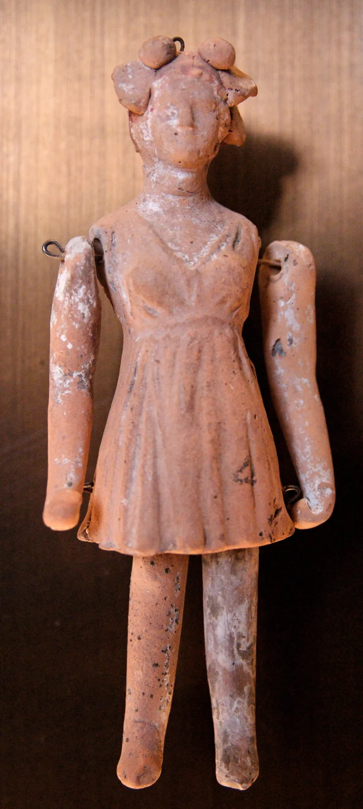

Muhammad married a six-year-old — Bukhari 5134
AdmittedThe facts sit in Islam's own trusted sources. You can make this point from their books alone.
What Islam's own books record
Sahih al-Bukhari 5134 and 3894, and Sahih Muslim 1422, record it from Aisha herself. Muhammad married her when she was six.
He consummated the marriage when she was nine. Sahih al-Bukhari 6130 adds that she was playing with dolls at his house.
Where this comes from
This is not an accusation from outside. It is Aisha's own first-person account, in the two most trusted Sunni collections, through several chains.
Every classical scholar accepted it. Nine became a benchmark in Islamic law.
Why it is not only about the past
Quran 33:21 calls Muhammad an excellent pattern for all time. Quran 65:4 sets a waiting period after divorce for wives "who have not yet menstruated," which classical commentators applied to marriage before puberty.
So the question is not only what happened, but what it is a model for.
The Muslim answers, at full strength
Two answers circulate, and they contradict each other. One says Aisha was really about 15 to 19, reasoning from her sister Asma's age.
The other is the scholarly mainstream, argued by Jonathan A. C.
Brown for the Yaqeen Institute. The ages are authentic, and the revisionist route is bad hadith method.
The marriage must be judged in context. Betrothal of minors, with consummation at puberty, was normal across premodern societies, including in Jewish and Christian law of the era.
No contemporary or enemy of Muhammad criticised it. Aisha reports it without complaint and became Islam's greatest female scholar.
How strong is this argument?
They admit the facts themselves, in the strongest possible sources. Yaqeen rejects the 15-to-19 rescue as indefensible.
So the live debate is only about how to judge it, and that debate concedes every fact. Be fair, and say this: such marriages were unremarkable in antiquity.
The Christian question is narrower. It is about the claim that this man is the timeless model, not about 7th-century norms.
What to say
"I am not trying to insult anyone. May I ask how you understand Bukhari 5134?"


How they answer this — at its strongest
They say the ages are right, and such marriages were normal then.
Two defences circulate, and they do not agree. One holds that Aisha was really about 15 to 19. It reasons from her sister Asma's reported age, and from other clues.
The other is the scholarly mainstream. Jonathan A. C. Brown sets it out in his Yaqeen Institute paper. On that view the ages are sound, and the 15-to-19 route is bad hadith method. The marriage must be judged in its own setting.
Betrothal of minors was normal across the old world, with the marriage begun at puberty. That included the Jewish and Christian law of the day. No contemporary of Muhammad, friend or enemy, ever faulted it. Aisha tells it without complaint, and became Islam's greatest woman scholar. And the marriage was commanded in a dream.
The verdict
Strong for you: every fact is granted, and only the judging is argued.
The ages are granted in the strongest Islamic sources there are. They come from Aisha herself, in both Bukhari and Muslim, through several chains. The leading traditional body rejects the 15-to-19 escape. It calls that method indefensible, since no classical scholar in 1,300 years doubted the ages.
So the live debate is only about the moral judgment. That is a real argument, and it grants every fact. For fairness, say plainly that such marriages were unremarkable in the ancient world. The Christian critique aims at one claim: that this man is the timeless moral model (33:21). It does not aim at 7th-century custom as such.
Sources
- Sahih al-Bukhari 5134
- Sahih Muslim 1422
- Yaqeen (Jonathan Brown) — The Age of Aisha: Rejecting Historical Revisionism
- WikiIslam — Aisha's Age (revisionist arguments catalogued)